Menú Principal
Primero se muestra el sistema de gestión y las opciones que puedes realizar.
Si das enter podrás ver el menú principal donde aparecen emergencias, clientes, tareas, ver todo, empleados y salir.
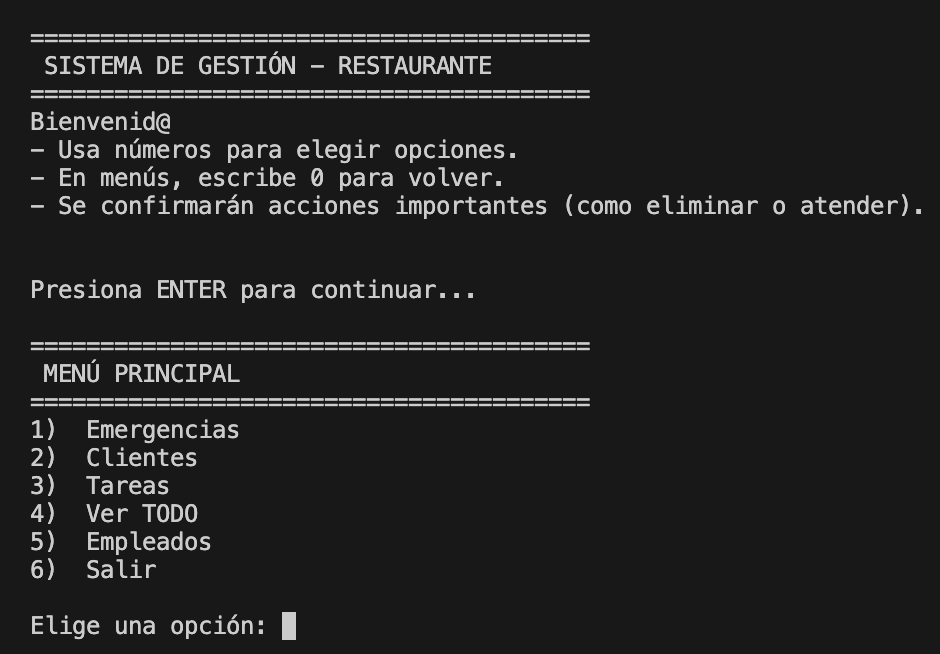Menú de Emergencias
Opción 1 → Agregar nueva emergencia.
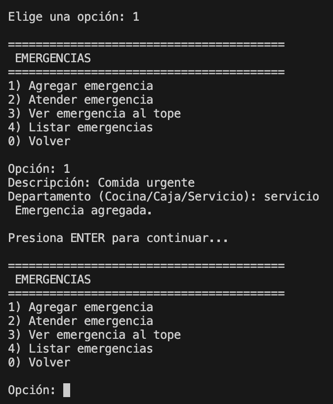Opción 2 → Atender la emergencia en el tope.
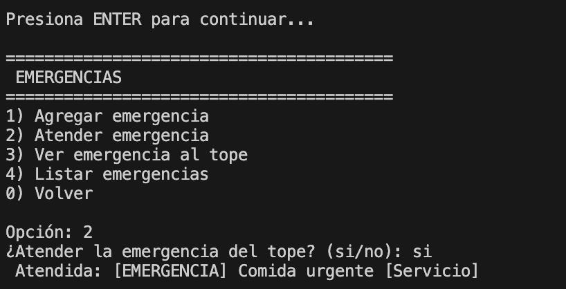Opción 4 → Ver la emergencia del tope.

Opción 5 → Ver lista de emergencias.
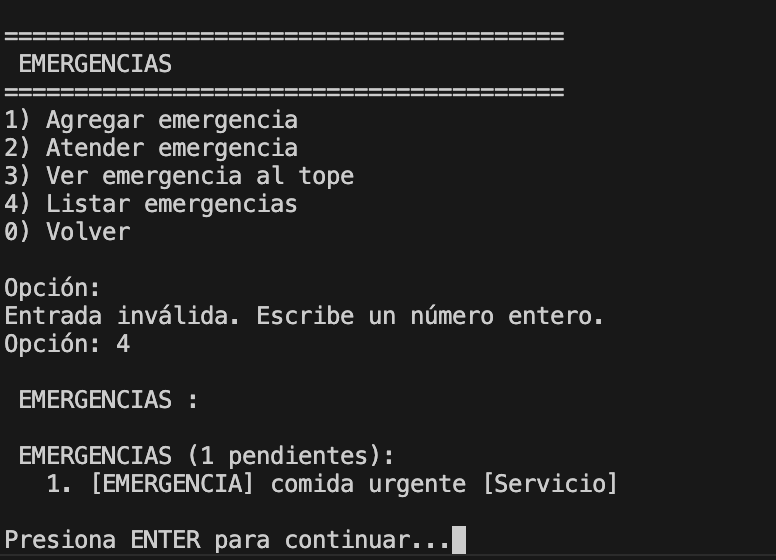Opción 0 → Volver al menú principal.
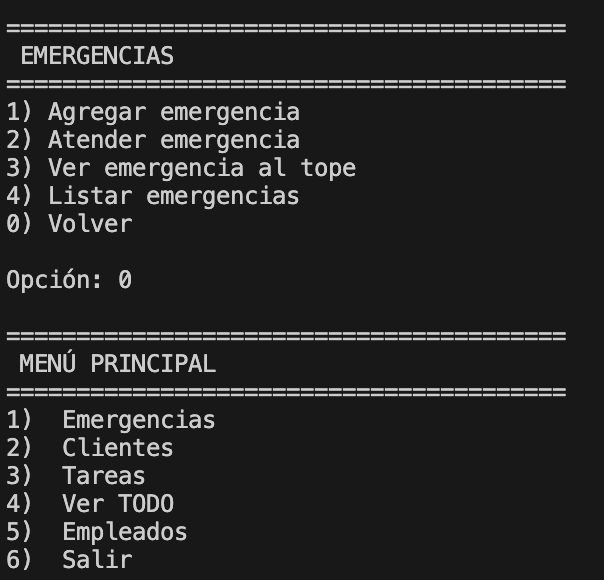Menú de Clientes
Opción 1 → Agregar nuevo cliente.
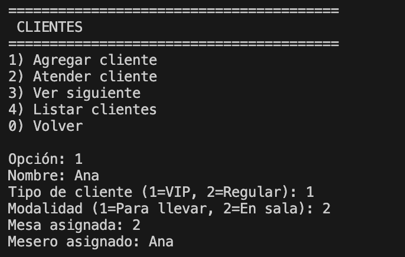Opción 2 → Atender cliente.
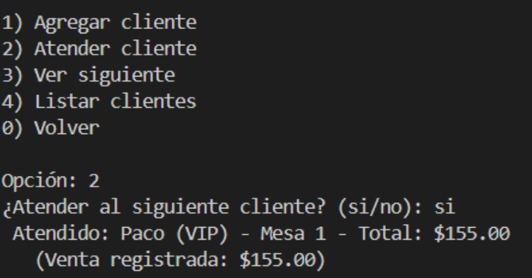Opción 3 → Ver lista de clientes.
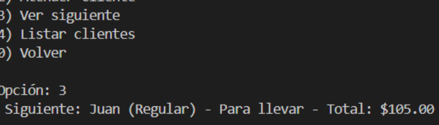Opción 4 → Mostrar clientes en espera.
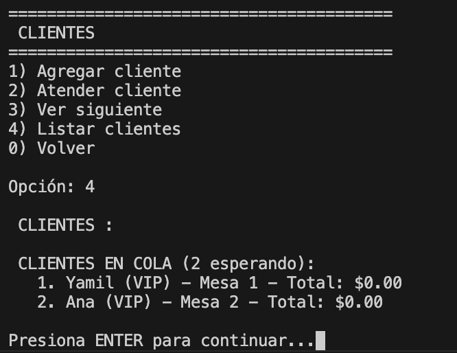Opción 0 → Volver al menú principal.
Menú de Tareas
Opción 1 → Agregar nueva tarea.
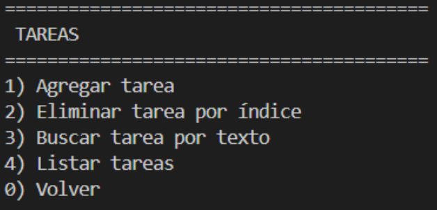Opción 2 → Eliminar tarea.
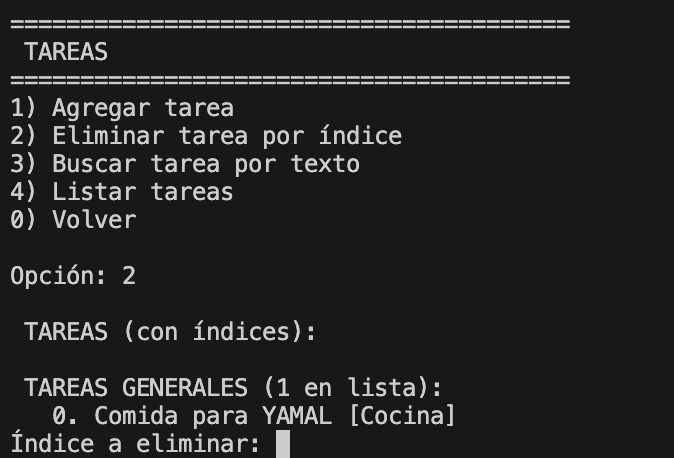Opción 3 → Buscar tarea por texto.
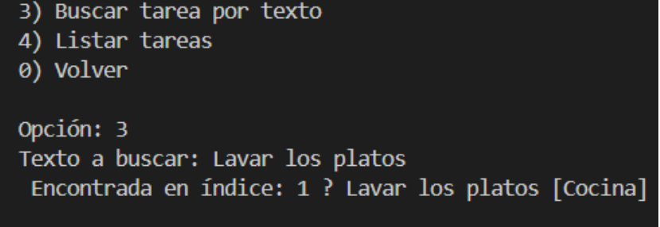Opción 4 → Ver todas las tareas.
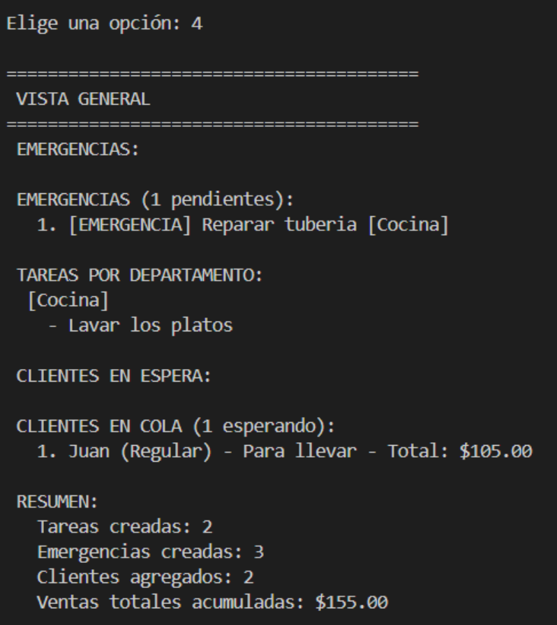Opción 0 → Volver al menú principal.
Ver Todo
Opción 4 del menú principal → Muestra emergencias, clientes y tareas.
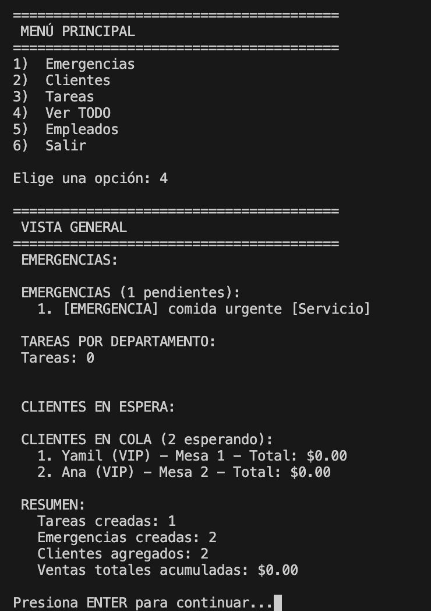Opción 0 → Volver al menú principal.
Empleados
Opción 1 → Ver CEO.
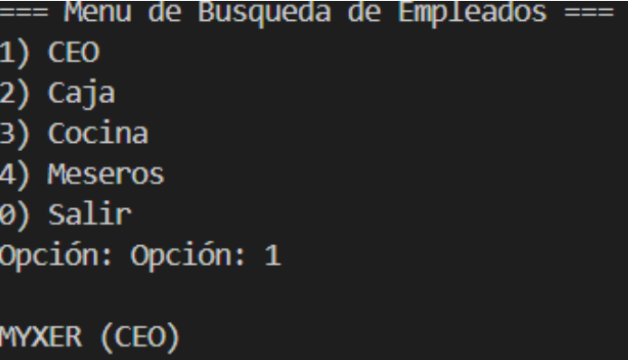Opción 2 → Ver empleados de caja.
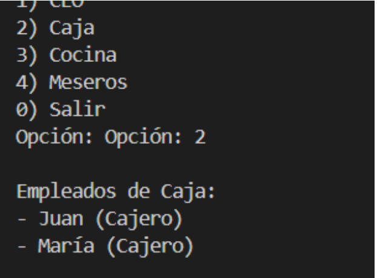Opción 3 → Ver empleados de cocina.

Opción 4 → Ver meseros.
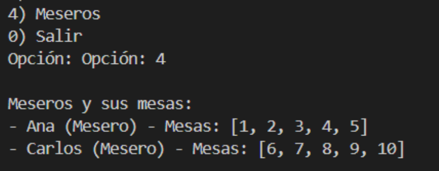Opción 0 → Volver al menú principal.
Búsquedas y Reportes
Opción 6 del menú principal → Acceso a búsquedas y reportes.
Opción 1 → Estado detallado de las mesas.
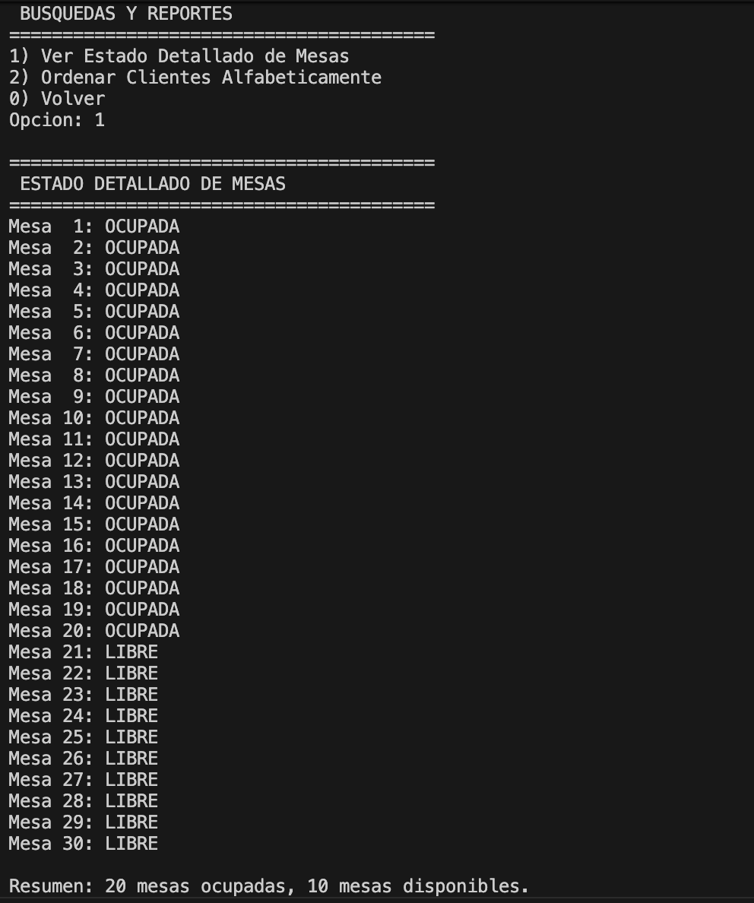Opción 2 → Ordenar clientes alfabéticamente.
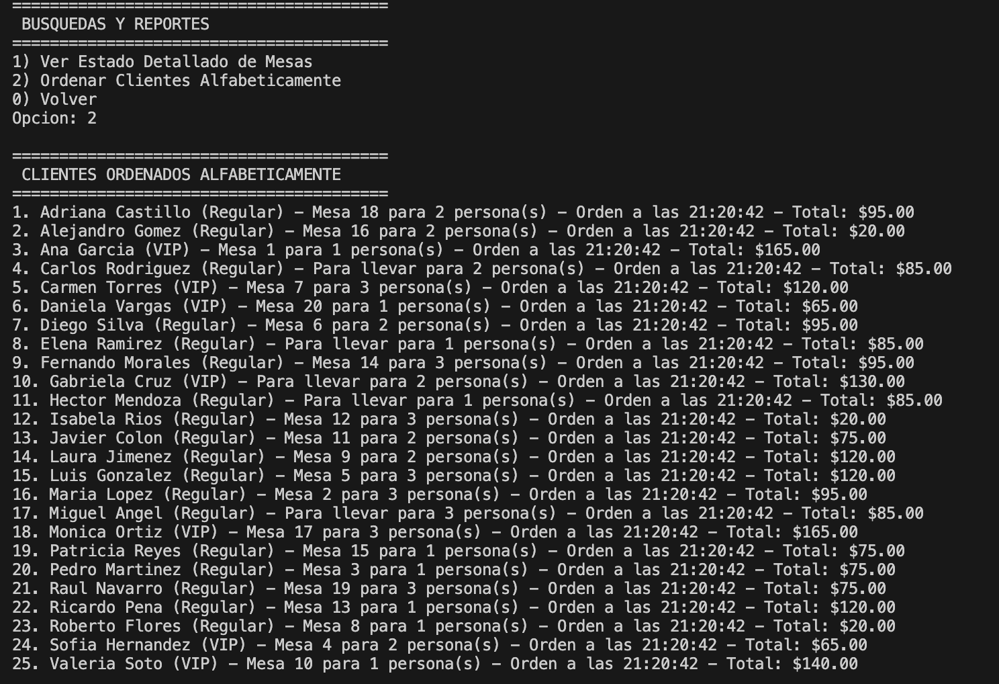Opción 0 → Volver al menú principal.
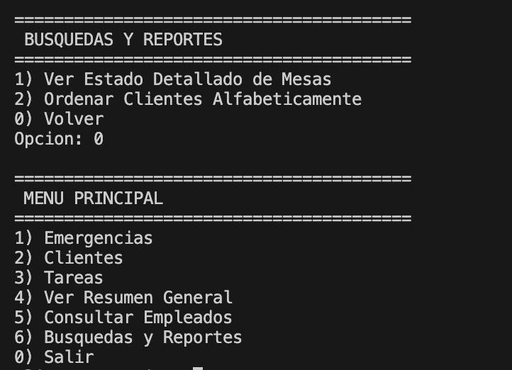Salir
Opción 6 → Salir del programa.
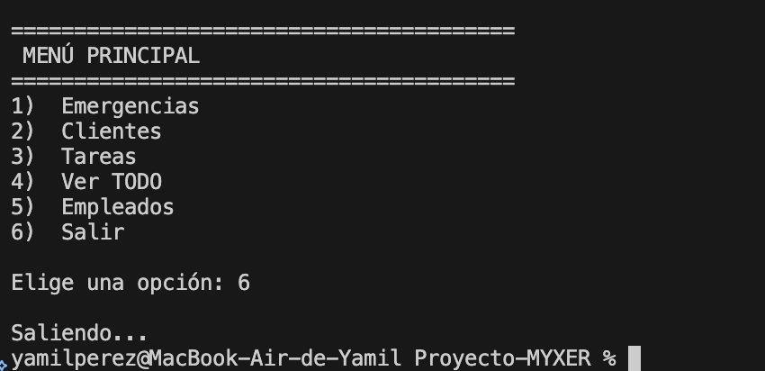